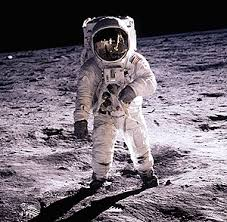
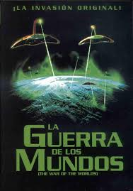

La exploracion espacial designa los esfuerzos del hombre
en estudiar el espacio y sus astros
desde el punto de vista cientifico y de su explotacion economica.
Estos esfuerzos pueden involucrar tanto seres humanos viajando en
naves espaciales como satelites con recursos de
telemetria o sondas teleguiadas enviadas a otros
planetas(orbitando o aterrizando en la superficie de estos cuerpos celestes).
La ciencia que estudia los vuelos espaciales y la tecnologia relacionada con ellos se denomina astronautica.
Las personas que pilotean naves espaciales, o son pasajeros en ellas, se llaman astronautas
en Rusia: cosmonautas; en China:taikonautas). Tecnicamente se considera astronauta a todo aquel que emprende un
vuelo suborbital (sin entrar en orbita) u orbital a como minimo 100 km de altutud
(considerando el limite externo de la atmosfera).

El cielo siempre a atraido atencion alos suenos del hombre.
Ya en 1634 se publico la que se consideraria primera
novela de ciencia ficcion, Somnium, de Johannes Kepler,
que narra un hipotetico viaje ala luna. Mas tarde, en
1865, en una famosa obra de ficcion titulada "De la Tierra ala Luna",
Julio Verneescribe sobre un grupo de
hombres que viajo asta la Luna usando un gigantesco canon.
En Francia, Georges Melies, uno de los pioneros
del cine,tomaba la novela de Verne para crear "Le voyage dans la Lune" (1902),
una de las primeras peliculas
de ciencia ficcion en la que describia un increible viaje ala luna.
En obras como "La querra de los mundos" (1898)
y "The first men in the moon" (1901) H.G WELLS
tambien se concibieron ideas de la exploracion del espacio
y de contacto con civilizaciones extraterrestres.

Este es un video de un viaje al espacio realizado por el hombre. Mostrandolo en una animacion como se realiza.